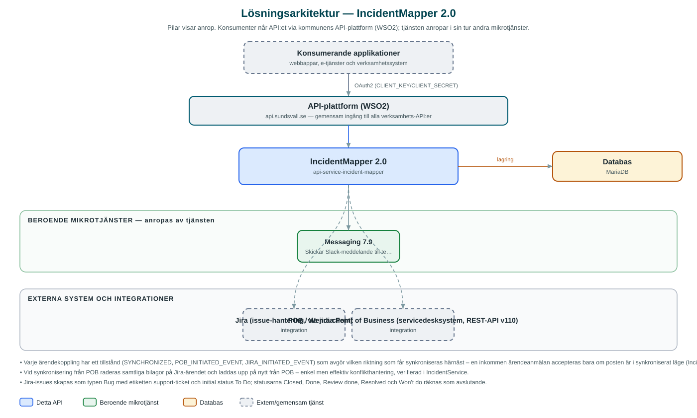

IncidentMapper
Synkroniserar supportärenden dubbelriktat mellan servicedesksystemet POB och utvecklingsteamens Jira, så att status och kommentarer hålls i takt i båda systemen.
Om API:et
IncidentMapper knyter ihop kommunens servicedesk med utvecklingsteamens arbetsverktyg. När servicedesken eskalerar ett POB-ärende till ett utvecklingsteam anmäls ärendet till detta API, som skapar en motsvarande Jira-issue med beskrivning och bilagor och meddelar teamet via Slack. Därefter hålls de två systemen synkroniserade utan manuellt dubbelarbete.
Synkroniseringen är dubbelriktad och drivs av ett schemalagt jobb som var trettionde sekund pollar Jira efter ändringar och arbetar av kön av synkroniseringsposter i databasen. Ändringar i Jira (t.ex. nya kommentarer eller statusbyten) skrivs tillbaka till POB, och ändringar i POB uppdaterar Jira-ärendet. När ett Jira-ärende når en avslutande status stängs kopplingen och ärendet rensas.
Varje ärendekoppling har ett tillstånd i databasen (synkroniserad, POB-initierad händelse eller Jira-initierad händelse) som styr vilken riktning nästa synkronisering får – ett enkelt sätt att undvika att systemen skriver över varandras ändringar.
Det här gör API:et
- Automatisk Jira-issue av POB-ärenden – Eskalerade POB-ärenden blir Jira-issues av typen Bug med etiketten support-ticket, komplett med beskrivning och bilagor.
- Dubbelriktad synkronisering – Kommentarer, bilagor och statusändringar synkroniseras i båda riktningarna mellan POB och Jira.
- Schemalagd pollning – Ett synkroniseringsjobb pollar Jira var trettionde sekund och kan även startas manuellt via en jobs-endpoint.
- Slack-notifiering – När en ny Jira-issue skapas notifieras teamet i Slack via Messaging, med länk till ärendet.
- Automatisk avslutning – När Jira-ärendet når en avslutande status (Closed, Done, Resolved med flera) avslutas synkroniseringen och kopplingen rensas.
API-dokumentation
API:ets samtliga resurser, parametrar och datamodeller finns beskrivna i en OpenAPI-specifikation som är hämtad ur källkodsförrådet. Den kan utforskas interaktivt i Swagger UI eller laddas ner som YAML. Programvaruförteckningen (SBOM) listar tjänstens samtliga tredjepartskomponenter med version och licens.
Teknisk dokumentation
Nedan beskrivs hur tjänsten är uppbyggd, vilka andra tjänster den anropar och vad som krävs för att driftsätta den. Informationen är härledd ur källkoden och dess konfiguration på GitHub.
Arkitektur

API:et är en mikrotjänst (Java 25, Spring Boot via kommunens gemensamma tjänsteplattform dept44 (8.0.8), byggd med Maven). Konsumenter når tjänsten via kommunens gemensamma API-plattform (WSO2) på api.sundsvall.se – tjänsten anropas aldrig direkt. Tjänsten anropar i sin tur andra mikrotjänster i kommunens tjänstelandskap. Lagring: MariaDB med Flyway-migrationer; kopplingen mellan POB-ärenden och Jira-issues lagras med synkroniseringstillstånd. Övriga integrationer som förekommer i koden: Jira (issue-hantering, via jira-client), POB / Wendia Point of Business (servicedesksystem, REST-API v110).
Teknikstack
- Språk: Java 25
- Ramverk: Spring Boot via kommunens gemensamma tjänsteplattform dept44 (8.0.8), byggd med Maven
- Databas: MariaDB med Flyway-migrationer; kopplingen mellan POB-ärenden och Jira-issues lagras med synkroniseringstillstånd
- Övrigt: Jira-klient (chavaillaz jira-client 2.2.8), schemalagt synkroniseringsjobb med Shedlock-låsning, Resilience4j (circuit breakers)
Beroenden till andra mikrotjänster
Tjänsten anropar följande mikrotjänster. Versionerna är hämtade ur källkodens integrationsklienter.
| Tjänst | Version | Användning |
|---|---|---|
| Messaging | 7.9 | Skickar Slack-meddelande till teamet när en ny Jira-issue skapats. |
Programvaruförteckning
Tjänsten bygger på 264 tredjepartskomponenter fördelade på 14 olika licenser. Till skillnad från tabellen ovan, som listar andra mikrotjänster, avses här de programbibliotek som ingår i bygget. Se programvaruförteckningen för hela listan.
Konfiguration och driftsättning
- application.yml med anslutningsuppgifter till Jira (URL, användare, token) och POB samt OAuth2-klientuppgifter för Messaging
- MariaDB-anslutning; databasschemat versionshanteras med Flyway
- Cron-uttryck för synkroniseringsjobbet (var 30:e sekund som standard; kan stängas av med "-")
- Slack-kanal för notifieringar konfigureras via Messaging-inställningarna
Noterbart ur källkoden
- Varje ärendekoppling har ett tillstånd (SYNCHRONIZED, POB_INITIATED_EVENT, JIRA_INITIATED_EVENT) som avgör vilken riktning som får synkroniseras härnäst – en inkommen ärendeanmälan accepteras bara om posten är i synkroniserat läge (IncidentService).
- Vid synkronisering från POB raderas samtliga bilagor på Jira-ärendet och laddas upp på nytt från POB – enkel men effektiv konflikthantering, verifierad i IncidentService.
- Jira-issues skapas som typen Bug med etiketten support-ticket och initial status To Do; statusarna Closed, Done, Review done, Resolved och Won't do räknas som avslutande.
- Slack-notifieringen skickas via Messaging-API:ets Slack-kanal, inte direkt mot Slack – tjänsten har alltså ingen egen Slack-token.
Källkod
Källkoden är öppen och finns hos Sundsvalls kommun på GitHub. I källkodsförrådet finns även instruktioner för att klona, konfigurera och starta tjänsten i egen miljö.